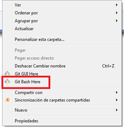

Git es un software de control de versiones. Veremos un pequeño ejemplo de como subir un proyecto a
GitHub usando Git.
Para poder seguir este tutorial hay que tener instalado la consola de Git (en la página de Git hay información de como
instalarlo), y tener una cuenta en GitHub. Nos vamos al proyecto que queremos subir al repositorio:
Una vez aquí abrimos la consola de Git usando el botón secundario y eligiendo la opción "Git Bash Here".
Nos debe de aparecer la siguiente consola de Git:

Ahora podemos "inicializar" el repositorio utilizando el comando "git init".

Lo siguiente será configurar Git para que use nuestro nombre y nuestro email para este proyecto. Para ello usaremos los comandos "git config user.name" y "git config user.email".

Ahora podemos añadir archivos al "staging area", para ello usamos el comando "git add nombrearchivo", pero si queremos añadir todos los archivos entonces usaremos "git add ."

Podemos ver el estado de Git usando el comando "git status":

Para comunicarnos con seguridad con GitHub podemos utilizar el protocolo SSH(Secure SHell). Para esto vamos a hacerlo en 3 pasos:
Para ello abrimos la consola de Git (para esto no importa en que directorio abramos la consola) y usaremos el comando "ssh-keygen".

Una vez hecho esto se nos habrán generado dos archivos en el directorio que le hayamos indicado, la clave pública y la privada (para más información click aquí).

Una vez que ya tenemos nuestra clave ssh generada podemos ir a nuestra cuenta de GitHub. En la parte de arriba a la derecha nos vamos a "Settings".

Nos vamos al apartado "SSH and GPG keys".

Le damos a "New SSH key.

Se nos abrirá una pantalla como la siguiente:

Nos vamos a nuestro directorio donde esta nuestra clave pública, y copiamos el contenido en GitHub. Quedandonos algo parecido a esto:

Y ya podremos ver nuestra clave añadida.

Con esto ya podremos subir nuestro proyecto a GitHub. Para poder subir necesitamos la siguiente dirección que la podemos ver en GitHub dentro de nuestro proyecto.

Abrimos la consola de Git en la dirección de nuestro proyecto y usamos el siguiente comando "git remote add miproyecto direcciondegit".

Ahora hacemos commit utilizando el comando "git commit -m 'un ejemplo de mensaje de commit'"

Decir que "ftpclient" es el nombre que le he puesto al repositorio remoto en local, es decir, le podría haber puesto cualquier otro nombre. Ya estamos listos para hacer "push" a GitHub, para ello usamos el comando "git push -u miproyecto master".

Y ya podremos ver como nuestro proyecto esta en GitHub.